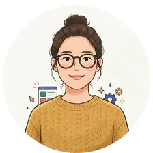
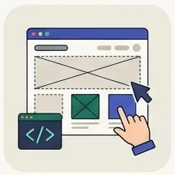
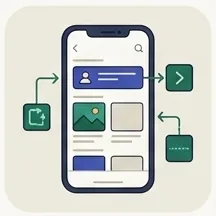

작은 팀, 분명한 역할
AI Studio는 대표 한 명과 역할별 AI 에이전트 다섯이 함께 일하는 소프트웨어 개발 회사입니다. 기획, 마케팅·콘텐츠, 디자인, 개발, QA가 각자 맡은 일을 하고, 진행 상황은 기록으로 남습니다.
대표
요구사항 정리부터 배포·전달까지 AI 에이전트와 호흡을 맞추며, 고객이 안심할 수 있는 최종 기준을 세웁니다.
PM
요구사항을 정리하고 작업을 나눕니다.
마케팅·콘텐츠
서비스 문구와 콘텐츠를 씁니다.

AI 에이전트디자이너
화면 시안과 디자인 요소를 만듭니다.
개발
서버·웹·앱을 구현합니다.
QA
결과물을 검수하고 테스트합니다.
구성원 이미지는 AI로 생성한 일러스트입니다. 대표 이미지는 대표를 그린 일러스트입니다.
필요한 만큼만 맡기세요
웹·앱·서버 개발을 맡길 수 있고, 단계별로만 의뢰하셔도 됩니다.

웹
서비스 사이트와 웹 애플리케이션을 만듭니다.

앱
모바일 앱을 기획부터 구현까지 만듭니다.
서버
API와 백엔드를 설계하고 구현합니다.
기획만, 검수만 맡기셔도 됩니다. 문의 시 필요한 단계를 알려 주세요.
서비스 아이콘은 AI로 생성한 일러스트입니다.
이렇게 진행합니다
- 1 요청문의를 접수합니다.
- 2 기획범위와 일정을 정리합니다.
- 3 제작디자인하고 개발합니다.
- 4 검수테스트하고 리뷰합니다.
- 5 승인·전달대표가 확인한 뒤 전달합니다.
고객에게 전달하는 결과물은 대표가 승인합니다.
AI Studio의 세 가지 약속
데이터 분리
고객 데이터는 해당 고객 전용 저장소 밖으로 복사하지 않습니다.
기록
작업의 결정 사항은 기록으로 남깁니다.
사람 승인
고객 전달, 배포, 결제처럼 밖으로 나가거나 비용이 드는 일은 사람이 승인합니다.
만들고 싶은 것을 알려 주세요
프로젝트 개요만 적어 주셔도 됩니다. 영업일 기준 2일 이내에 회신드립니다.
문의 내용은 Google Forms(구글)로 전송됩니다. 개인정보 처리는 개인정보처리방침을 참고해 주세요.
이메일로도 문의하실 수 있습니다: dokkl2323@gmail.com